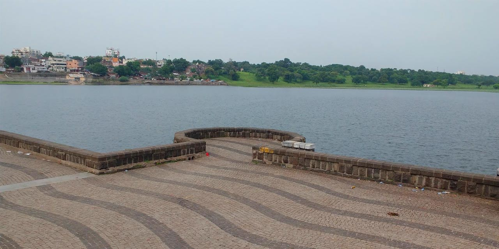
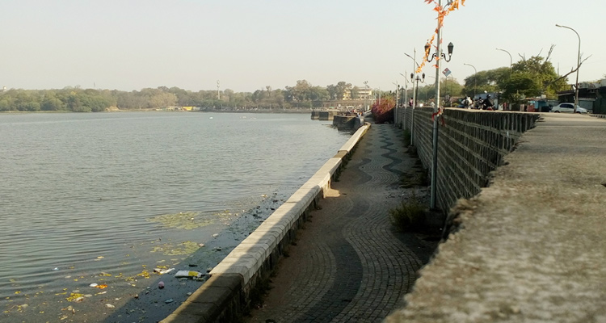
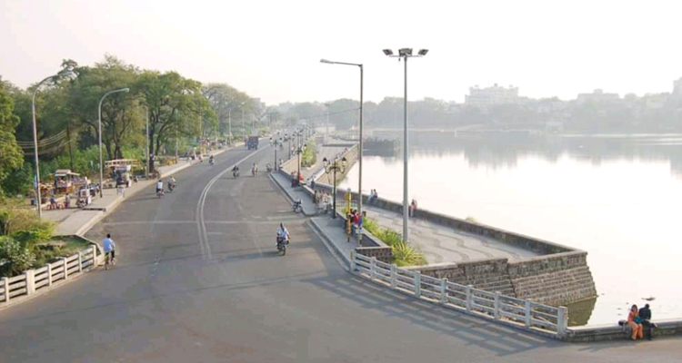
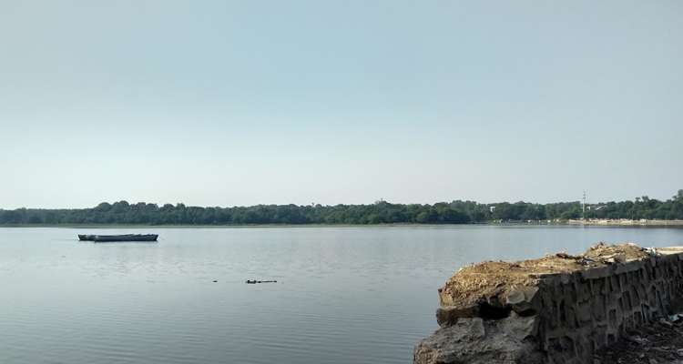
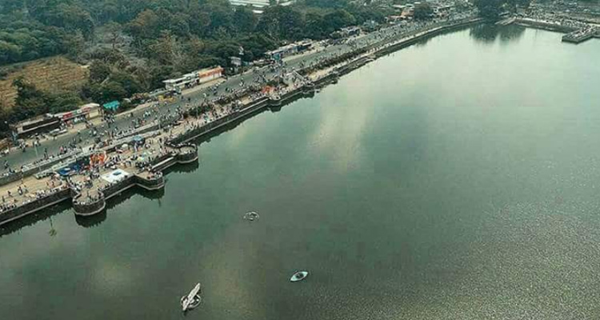
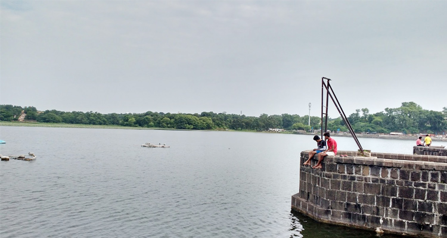
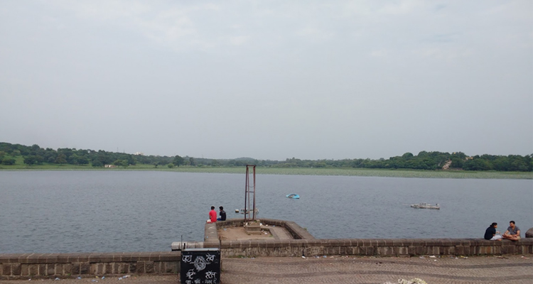

Futala Lake is a very popular lake in Nagpur, which is located in Juna Futala, Chowpati Road,
Vayusena Nagar. Futala lake is also called Telankhedi Lake. It is 6km far from the city center. As
per sources, it is more than 200 years old. Futala
Lake is a very popular lake in Nagpur, which is located in Juna Futala, Chowpati Road, Vayusena Nagar.
Futala lake is also called Telankhedi Lake. It is 6km far from the city center. As per sources,
it is more than 200 years old. It was built by Raja
Bhonsle and is spread over 60 acres. The lake is surrounded by green forest on three sides and
Chowpatty on the other side. The main reason for the popularity of this lake is the colorful fountains,
it is the reason people are searching for it as the Futala fountain show.
Image Gallery
|  |  |  |  |  |
|  |  |  |
|
Rating: | 3.5/5 stars
total 8936 reviews |
Futala Lake Nagpur Address: Juna Futala, Chowpati Road, Vayusena Nagar, Nagpur, Maharashtra, 440013, India |
Futala Lake Nagpur Phone 08788 244695 |
HOME